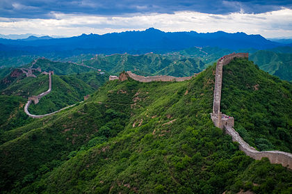
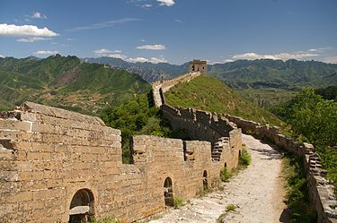
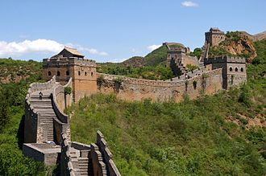

Сім нових чудес світу — проект, організований фондом «Нові сім див світу» (NOWC), який намагався об'єднати сім чудес стародавнього світу із списком сучасних чудес з метою збереження культурної спадщини для майбутніх поколінь, аби уникнути повторення ситуації з сімома стародавніми дивами світу. Переможці оголошені 7 липня 2007 року в Лісабоні (Португалія). Голосування проходило за допомогою SMS, телефону або Інтернету.
  